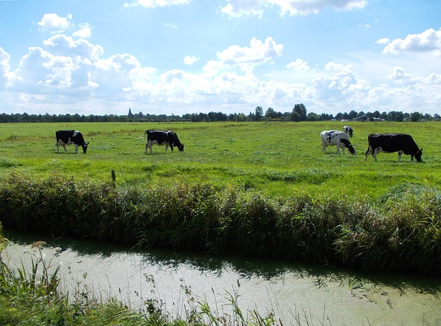

Ochsenbäckchen  Zubereitung Arbeitszeit: ca. 40 Min. / Schwierigkeitsgrad: simpel / Kalorien p. P.: keine Angabe Die parierten Bäckchen von allen Seiten pfeffern und salzen und mit Küchengarn wieder zu Bäckchenform zusammen binden. Ofen auf 120° C heizen. Temperaturkontrolle! Das Gemüse in kleine Würfel schneiden, die Zwiebel fein schneiden. In einem ausreichend großen Schmortopf oder Bräter die Bäckchen bei großer Hitze von allen Seiten in Olivenöl kräftig anbraten, dass sie Farbe nehmen. 1 Esslöffel Tomatenmark mit anrösten. Das Wurzelgemüse dazugeben und auch Farbe nehmen lassen. Portwein und Rotwein zu je einem Drittel angießen und einkochen lassen. Diesen Vorgang noch 2 mal wiederholen. Den Kalbsfond angießen, so dass die Bäckchen fast bedeckt sind und den Topf auf den Boden des Ofens stellen. Bei 120°C Ofentemperatur ca. 3,5 Stunden schmoren. Zwischendurch die Bäckchen im Bratensud immer wieder wenden. Wenn die Bäckchen so weich sind, dass man sie mit dem Löffel essen könnte, herausnehmen, in Alufolie wickeln und im Ofen nachziehen lassen. Den Bratenfond durch ein Sieb in einen Topf streichen und um ein Drittel reduzieren (einkochen lassen) In einem kleinen Topf 1 Esslöffel Tomatenmark anrösten, mit dem Cognac ablöschen, einkochen und dann den Balsamicoessig dazugeben. Kurz einkochen lassen, so dass eine sirupartige Sauce entsteht. Diese zu der eingekochten Sauce von den Bäckchen geben, durchrühren. Die Bäckchen vom Küchengarn befreien und zurück in die Sauce legen. Sehr große Bäckchen eventuell teilen. Die Sauce hat eine unglaublich sämige Konsistenz und einen hinreißend intensiven Geschmack. Das Fleisch ist an Zartheit wohl nicht zu überbieten. Ochsenbäckchen sind nicht so einfach zu beschaffen, am besten bei einem Metzger, der noch selbst schlachtet und auf Vorbestellung. Wir essen dazu gerne Kartoffelgratin und Möhrchen aber auch Bandnudeln passen gut oder Steckrübenpüree mit Rosenkohl.